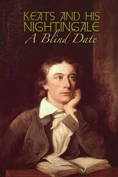

Keats and His Nightingale: A Blind Date
58th Academy Awards
(Oscars 1986)
1 Nomination, 0 Awards
| Nominations | ||
|---|---|---|
| Category | Nominees | Result |
| Documentary (Short Subject) | James Wolpaw and Michael Crowley | Nominated |